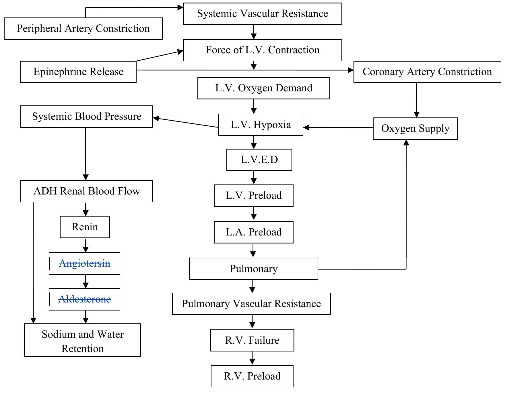

Congestive Cardiac/Heart Failure (C.C.F)
Congestive Cardiac/Heart Failure (C.C.F)
This is a cardiovascular state in which the heart is unable to pump an adequate amount of blood to meet the metabolic needs of the tissues. C.C.F is not a disease, but a syndrome caused by a variety of pathophysiological processes.
Common Causes of C.C.F
Chronic Causes
- Coronary heart/artery disease.
- Hypertensive heart disease.
- Cardio myopathy.
- Bacterial endocarditis
- Rheumatic heart disease.
- Cor-pulmonale
- Anemia
Acute Causes
- Acute myocardial infarction.
- Pulmonary emboli.
- Hypertensive crisis.
- Ventricular septal defect
- Dysrhythmias.
- Thyrotoxicosis.
- Anemia
Pathophysiology of C.C.F
- C.C.F is usually manifested by biventricular failure although one ventricle.
May precede the other in dysfunction. Normally the pumping actions of the left and right sides of the heart complement each other producing a;
- Continuous flow of blood, however, as a result of pathological conditions, one side may fail while the other side continues to function normally;
- For a period of time. Because of the prolonged strain, the functioning side of the heart will eventually fail resulting in biventricular;
- Failure. The most common form of initial heart failure is;
- Left sided failure. C.C.F occurs in a retrograde version progressing from the left ventricle to the pulmonary system to the right ventricle.
- This will usually lead to and is the main cause of right sided failure. However, right sided failure can occur as a result of right ventricular myocardial infarction or cor-pulmonale. C.C.F will eventually develop in the majority of persons with moderate to severe cardiac disease.
Pathophysiology
Left Sided Heart Failure
This results from left ventricular dysfunction which causes blood to backup through left atrium and into the pulmonary veins. The increased pressure causes fluid extra versation from the pulmonary capillary bed into the interstitial and then the alveoli which is manifested as pulmonary congestion and edema.
- Diseases of the coronary arteries.
- Cardio-myopathy.
- Aortic valvular disease.
- Hypertension.
- Rheumatic heart disease resulting into mitral valte incompetence or stenosis.
When a myocardial infarction occurs, myocardial tissue is damaged and replaced by scar tissue. The scar tissue is less elastic and has poorer contractility than the undamaged myocardium. The loss of myocardial mass increases the workload on the remaining functioning tissue. If the functioning myocardial cant compensate for this less, the volume of blood ejected from the ventricles decreases and left heart failure results. When hypertension is present, the heart must pump blood against a high arterial pressure eventually this can lead to left ventricular hypertrophy. Hypertrophic muscle has poor contractility and overtime will result in failure.
In aortic valvular heart disease, the left ventricle must contract forcefully to pump blood through the stenotic aortic valyte, overtime this results in left ventricular failure. This requires an increased amount of pressure that must be generated by the left ventricle. In addition, the valvete often fails to close completely and blood is regurgitated into the left ventricle.
In mitral valvue disease, a similar process involving the left atrium occurs.
Right-Sided Heart Failure
Right-sided heart failure from weakened right ventricle causes venous congestion in the systemic circulation and results in peripheral edema, hepatomegaly and splenomegaly.
The primary cause of right-sided heart failure is left sided heart failure. In this situation, leftsided failure results in pulmonary congestion and increased pressure in blood vessels of the lungs (pulmonary hypertension).
Eventually pulmonary hypertension results in right-sided heart failure cor-pulmonale (right ventricular dilatation and hypertrophy due to pulmonary pathology) can also cause right-sided heart failure.
Distended neck veins can be seen when a client with right-sided heart failure is in a semirecumbent position and this is due to increased pressure in the right atrium.
Other Causes of Right-Sided Heart Failure
- Myocardial infarction of the right atrium and ventricle.
- Chronic pulmonary diseases i.e. pulmonary TB, bronchitis, chronic pneumoconiosis, pneumonia etc.
- Tricuspid and pulmonary valve stenosis.
- Pericarditis.
Factors Precipitating to Heart Failure
There are certain factors that can precipitate heart failure in a person with heart disease i.e.
- Dysthmias which lead to ineffective mechanical pumping.
- Reduction or ear cardiac therapy either pharmacological or dietary.
- Infections either viral or bacterial.
- Emotional or physical stress.
- Second type of heart disease i.e. rheumatic heart disease.
- Anemia which causes an increased heart rate as a compensatory mechanism to maintain tissue oxygenation.
- Thyrotoxicosis which causes an increased heart rate.
Compensatory Mechanisms
C.C.F can have an abrupt onset as with acute myocardial infarction or can be a gradual/slow insidious process and thus the result of slow progressive changes. The overloaded heart results to certain compensatory mechanisms to try to maintain adequate cardiac output.
- Sympathetic nervous system activation: Because there is inadequate stroke volume and cardiac output, the baro-receptor reflexes cause sympathetic nervous system activation which increases the release of epinephrine and norepinephrine. This results in an increased heart rate and myocardial contractility to raise cardiac output. This response also increases myocardial oxygen demand.
- Dilatation: Is an enlargement of the chambers of the heart. It occurs when pressure in the left ventricle is elevated over time. The muscle fibers of the heart stretch and thereby increase their contractility force. However, this increased contractility produces greater wall tension and more myocardial oxygen is required for contraction. Therefore, dilatation is a mechanism developed to cope with increasing blood volume. After maximum hypertrophy dilatation becomes primary mechanism. Eventually it becomes inadequate because the elastic elements of the muscle fibers are overstrained. Dilatation can progress to mitral valyte incompetence and regurgitation which further increases the cardiac workload.
- Renal response to heart failure: As cardiac output falls, blood flow to the kidneys decreases causing decreased glomeruli filtration. A complex reaction begins, the kidneys release rennin which reacts with angiotensinogen to form angiotensin then this causes;
- The adrenal cortex to release aldosterone which causes sodium retention.
- Increased vaso-constriction which increases the arterial pressure.
- The posterior pituitary senses the increased osmotic pressure due to sodium retention and secrets anti-diuretic hormone (ADH).
- ADH increases water reabsorption in the renal tubules causing water retention.
- The decreased renal blood flow also stimulates the secretion of ADH. The cycle repeats itself creating a downward spiral of a clients condition, since vaso-constriction increases after load and causes an increased workload on the heart.
- Hypertrophy: In chronic congestive heart failure, hypertrophy is an increase in the muscle mass and the cardiac wall thickens due to overwork and strain. It occurs slowly because it takes time for muscle tissue to develop. As myocardial mass increases, the need for additional blood and oxygen grows. This cannot be met in the client with heart disease.
Clinical Manifestations
The clinical manifestations of chronic C.C.F depend on:
- Age
- Underlying type
- Extent of heart disease
- Which ventricle is failing to pump blood effectively.
These manifestations include:
- Fatigue
- Dyspnea
- Tachycardia
- Edema
- Nocturia
- Skin changes
- Behavioral changes
- Chest pain
- Cough
Fatigue: Is one of the earliest symptoms of chronic C.C.F. The client notices fatigue after activities that normally arent ming. The fatigue is due to impaired circulation and oxygenation of tissues. It is sometimes described as sick fatigue because of the decreased amount of blood reaching the musculo-skeletal system.
Dyspnea: Is a common sign of chronic C.C.F. It is caused by increased pulmonary pressures secondary to interstitial and alveolar edema. This results in fluid poor gaseous exchange because of fluid in the alveolar. The shortness of breath makes the client short of air hunger that prompts rapid shallow respirations. Dyspnea can occur with mild exertion or at rest. Orthopnea is shortness of breath that occurs when a client is in a recumbent position.
Tachycardia: Because cardiac output is diminished there is an increased sympathetic nervous system stimulation to compensate for low output (It is important to remember that cardiac output = stroke volume x heart rate). If the stroke volume decreases, the heart rate increases to maintain the cardiac output.
Edema: Is a common sign of C.C.F. It may occur in the legs (peripheral edema), liver (hepatomegaly), abdominal cavity (ascites), lungs (pulmonary edema and pleural effusion). If the client is bedfast, sacral edema is mostly likely to develop pressing the edematomatous skin with a finger may leave a transient indelitationible (pitting edema). The development of dependent edema and or a sudden weight gain 2 kg or more is often indicative of exacerbated congestive failure.
Nocturia: A person with chronic C.C.F will have decreased cardiac output, impaired renal perfusion and decreased urinary output during the day. However, when the person lies down at night, fluid movement from the interstitial spaces back into the circulatory system is enhanced. This causes increased renal blood flow and diuresis. The client may complain of having to avoid 6 or 7 times during the night.
Skin Changes: Because tissue capillary oxygen extractions increased in a person with chronic C.C.F, the skin appears dusky, it is also called cold and diaphoretic to touch. The peripheral vaso constriction that occurs to shunt blood to the vital organs is a minor compensatory mechanism in chronic C.C.F.
Behavioral Changes: Cerebral circulation may be impaired with chronic C.C.F especially in the presence of more widespread arteriosclerosis. The client or family may report unusual behavior including restlessness, confusion and decreased attention span or memory. These behavioural changes occur most often at night possibly because the client is experiencing more stimulation than during the day.
Chest Pain: In the presence of arteriosclerosis, C.C.F can precipitate chest pain because of decreased coronary perfusion from decreased cardiac output and increased myocardial work. Angina type of pain may accompany C.C.F whether it is acute or chronic. Others will be as per the side the failure has occurred.
Summary of the Clinical Manifestation
| Right-Sided Heart Failure | Left-Sided Heart Failure |
|---|---|
| (i) Peripheral edema weight gain. | (i) Increased heart rate. |
| (ii) Edema of dependent body parts (sacrum, anterior tibia and pedal). | (ii) Left ventricular hypertrophy. |
| (iii) Ascites | (iii) Poor oxygen exchange. |
| (iv) Pulmonary edema.(tates). | |
| (iv) Anasarca (massive generalized body edema). | |
| (v) Jugular vein distention. | |
| (v) Dyspnea respirations shallow up to 32 to $40 / \mathrm{min}$. | |
| (vi)Liver engorgement (hepatomegaly) | (vi) Orthopnea. |
| splenomegaly | |
| (vii) Paroxysmal nocturnal | |
| dyspnea. | |
| (viii) Cough which dry hacking is caused | |
| by alveolar irritation from fluid | |
| accommodation. | |
| (ix)Heart sound will be heard from | |
| vibrations of the ventricle wall due to | |
| resistance to ventricular feeling. | |
Diagnosis of C.C.F
The primary goal in the diagnosis is to determine the underlying cause of heart failure. Diagnostic measures to assess the degree of heart failure include:
- History and physical examination.
- Chest x-ray film.
- ECG.
- Exercise stress testing.
- Echocardiograph: To measure the size of cardiac chambers and to assess ventricular function.
- Cardiac catheterization and angiography are useful in detecting the underling heart disease.
- Hemodynamic monitoring via a pulmonary artery catheter which provides for a mean of directly assessing cardiac function.
Classifications of Persons with C.C.F Based on the Persons Tolerance to Physical Activity (By New York Heart Association)
- There is class I: There is no limitation on physical activity and ordinary physical activity not resulting in symptoms.
- Class II: Slight limitation on physical activity, no symptoms at rest but symptoms possible with ordinary physical activity.
- Class III: There are more severe limitations. Client may be comfortable at rest but clinical manifestations will show with slight physical activities.
- Class IV: Inability to carry on any activity without producing symptoms and symptoms are also possible at rest.
Therapeutic Management
Treatment of underlying cause is one of the most important goals of reaction for C.C.F. For example;
- Dysthmias have precipitated the failure they should be treated accordingly.
- Hypertension is the cause antihypertensive drugs should help.
- Valvular defects are the cause surgery is required.
- Oxygen therapy: Oxygen is given to the patient at 2 to 6 litters per minute. This is because in a person with C.C.F, oxygen circulation of the blood is reduced because the blood is not adequately oxygenated at the lungs. Therefore, administration of oxygen improves circulation and assists greatly in meeting tissue oxygen needs. Thus oxygen therapy helps to relieve dyspnea and fatigue.
- Rest: Physical and emotional rest allows the client to conserve energy and decreases the need for additional oxygen. The degree of rest recommended depends on the severity of heart failure. For example, a patient with severe C.C.F needs to be on complete best rest while the one with mild C.C.F can be ambulatory with restriction of strenuous activities.
Pharmacological Therapy
- Digitalis Preparations
- This increase the;
- Force/strength of cardiac contraction.
- They also; decrease the conduction speed within the myocardium and slow the heart rate. This action provides more complete emptying of the ventricles thus diminishing the volume remaining in the ventricles during diastole cardiac output increases because of an increased stroke volume from improved contractility.
Dosage
Usually 0.25 mgs d or od. At times the patient may be given 0.5 to 1 mg I.V. or I.M. then followed by 0.25 mgs . For children and old patients, the dosage is reduced to 0.025 mgs daily. - This increase the;
- Diuretics: These are used in heart failure to mobilize edematous fluid, reduce pulmonary venous pressure.
To reduce preload
If excess vascular volume is excreted, blood volume returning to the heart can be reduced and thus improved cardiac function. Thiazides are usually the first choice, because they are useful in treating edema secondary to C.C.F as well as in controlling hypertension.Example: Lasix (furosemide: Dose 40 to 80 mgs depending on the severity of edema I.V., I.M. or orally.)
- Vaso-dilator Drugs: These reduce systemic vascular resistance and pulmonary and peripheral venous pressure. This increases left ventricular preload thus myocardial function is enhanced and myocardial oxygen demand is lessened. These drugs include:
- Angiotensin converting enzymes inhibitors.
- Calcium channel blockers etc.
- For the Cough: The patient is given cough mixture or mist or expectorant
Nutritional Considerations
- The of chronic C.C.F is often treated by diet and restriction of sodium. A diet for a client with C.C.F should have 2 g of sodium.
- The diet such as milk, cheese, bread, cereals, eatales, and canned foods must be eliminated from the patients diet.
Nursing Management
- Activity intolerance related to fatigue secondary to cardiac insufficiency, pulmonary congestion and inadequate nutrition (dyspnea, weakness, fatigue, increase or decrease in pulse on exertion).
Nursing Interventions
- Have the client to rest in bed or chair when tired.
- Provide emotional and physical rest.
- If the patient is in bed, teach leg exercises to prevent phlebothrombosis.
- Assess the patient daily for dyspnea, fatigue and pulse rate to determine the level of activity that can be performed.
- Provide frequent small feeds instead of 3 large meals per day.
- Teach client about expenditure of energy on various activities.
- Sleep pattern disturbance related to nocturnal dyspnea and inability to assume favored sleep position (inability to sleep through the night).
Nursing Interventions
- Explain etiology of nocturnal dyspnea.
- Explore with the patient alternative positions of comfort to relieve dyspnea.
- Fluid volume excess related to heart/pump failure (edema, on exertion).
Nursing Interventions
- Evaluate degree of peripheral edema and measure abdominal girth daily.
- Administer digitalis agents and diuretics as prescribedented daily.
- Assess intake and output 8 hourly.
- Weigh the client daily.
- Observe manifestations of hypovolemia.
- Provide sodium restricted diet as ordered.
- High risk for impaired skins integrity related to edema or immobility (edema, taut shinny skin, impaired mobility).
Nursing Interventions
- Handle edematous skin gently.
- Pad bony prominence.
- Assess edematous areas every shift for skin breakdown.
- Impaired gas exchange related to excess preload, mechanical failure or immobility (increased respiratory rate, expertion).
Nursing Interventions
- Elevate head of bed to fowlers position.
- Support clients arms with pillows.
- Use footd board for legs.
- Administer oxygen by nasale cannula.
- Auscultate for lung and heart sound 4 hourly.
- Anxiety related to dyspnea or perceived threat of death (restlessness, irritability, expression of feelings of live threat).
Nursing Interventions
- Assess facial expression and behavior for feeling of apprehension.
- Allow the patient to ask questions.
- Promote sense of security by answering calls promptly from the patient/relative. (iv) Explain all procedures due to the patient.
- Assess past methods of coping and assist in adapting these methods to present lifestyle limitations.
- Demonstrate calm behavior with the patient.
- Ineffective individual coping related to alterations in lifestyle possible inability to use past coping methods or perceived loss of control (use of ineffective coping behaviours such as shouting, blaming, anger, withdrawal, social isolation, increased dependency).
Nursing Interventions
- Teach client about disease process and altered physiological function.
- Encourage patient to adopt lifestyle compatible with degree of heart impairment.
- Assist client and family in planning necessary changes.
- Encourage the client who seems discouraged or to plan and participate in own plan of care.
- Question client regarding concerns.
- Support the coping strategies and suggest alternate strategies to replace ineffective ones.
- Self-care deficit (total-related to dyspnea and fatigue) inability to perform part or all of the activities of daily living.
Nursing Interventions
- Assist clients/patients with all activities of daily living as needed.
- Assure patient of your willingness to assist with personal care.
- Advice family of patients fluctuating inability regarding self care activities.
- Altered health maintenance related to lack of knowledge regarding signs and symptoms of C.C.F, proper diet and medications (lack of adherence to low sodium diet, questioning of disease, diet and medications).
Nursing Interventions
- Teach the patient manifestations to report including shortness of breath at rest, swelling of ankles, feet or abdomen, nausea or vomiting, loss of appetite, weight gain of 1 to 2 kgs in a 2 day period, frequent urination, persistent cough, changes in heart rate more than 20 or less than $20+$ or 20 beats.
- Instruct the client on dietary restriction and medication regime.
NOTE: Many patients with C.C.F do not experience an acute episode, if they do, they are usually initially managed in a critical care unit and later transferred to a general unit when their conditions have stabilized.
Chronic Management
C.C.F may be a chronic illness for most persons and important nursing responsibilities are:
- Educating the patient about the physiological changes that have occurred.
- Assisting the patient to adapt to both the physiological and psychological changes. It must be emphasized to the client that it is possible to live productively with his health problem.
- Diet and weight management.
- Drug therapy.
- Rest.
Complications of C.C.F
- Pulmonary Edema: Which is a term used to refer to an acute life threatening situation in which the lung alveolar become filled with serous sanguineous fluid.
- Pleural Effusion: Resulting from increasing pressure in the pleural capillaries. A the capillaries into the pleural space.
- Left Ventricular Thrombus: With acute or chronic C.C.F, the enlarged ventricle left and poor cardiac output combines to increase the chance of thrombus formation in the left ventricle.
- Hepatomegaly: C.C.F can lead to severe hepatomegaly. The liver lobules become congested with venous blood. The hepatic congestion leads to impaired liver function functionally liver cells die, fibrosis occurs and liver cirrhosis can develop.
- Weight Changes: Initially there may be a progressive weight gain due to fluid retention. The client with C.C.F has an increased metabolic rate. Abdominal fullness from ascites and hepatomegaly frequently causes anorexia and nausea. Lately the patient decreases in weight, the patient becomes too sick to eat and there is decreased oxygen and nutrients transported to the tissues.
- Decompensated Heart Failure: When the compensatory mechanisms of dilatation, hypertrophy and tachycardia function to provide adequate output to maintain tissue oxygenation. The patient has compensated heart failure when these mechanisms can no longer assist the heart in maintaining cardiac output, the patient has decompensated heart failure and this state is very fatal.
Summary of Nursing Management
- Complete bed rest on sitting up position.
- Oxygen administration.
- Administration of medications as prescribed, observe effects and side effects.
- Frequent total patient assessment depending on the condition (wholly). Any abnormalities be reported immediately (weight, TPRIBP, pulse, urine, skin).
- Patients comfort: This include body comfort, linen and the environment, elimination.
- Diest: Should be salt free. Roughage be included to avoid constipation and small frequent meals at intervals and well balanced.
- Share health messages about the disease and also diet.
- Physical and emotional support.
- When patient gets well, discharge home and follow-up.